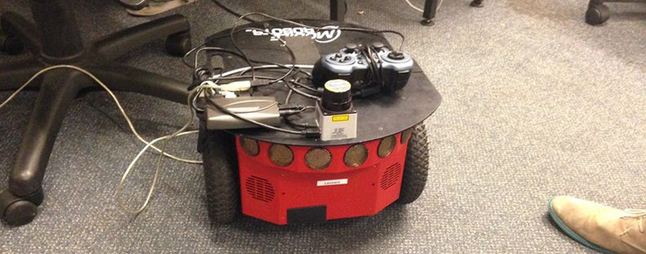
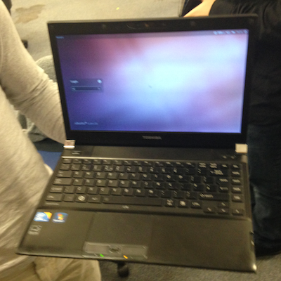
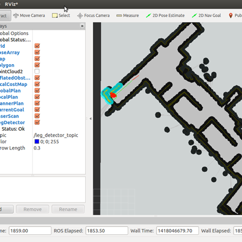
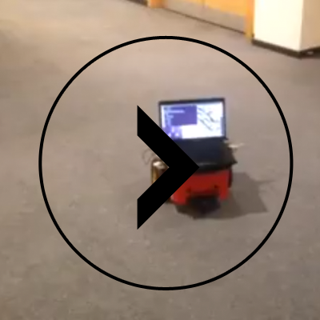

Mobile robots are regularly used in many applications: from aiding disaster recovery efforts in mines and after earthquakes, to military uses such as roadside bomb detection. Recently, they have even been employed to explore the surface of Mars. This website presents the (condensed) design and development of a Mobile Robot inspired by the AAAI Mobile Robotics Competition, 1996: “Call a Meeting”, which stressed navigation and planning. For our solution to the competition, we present an autonomous Mobile Robot that (a) searches for and finds an empty room (in terms of human presence) b) detects a human in a different room c) directs the human to the empty room. Our setup included a Pioneer 3-DX mobile robot, a Hokuyo URG-04LX laser sensor and a Toshiba i3 / 2GB RAM laptop. Notable features of our solution include a behavioural-based hybrid control architecture, ACML localization and a laser-based leg detection system for identifying persons.
Currently in 3rd year studying for an undergraudate course at the University of Birmingham.
Currently in 3rd year studying for an undergraudate course at the University of Birmingham.
Currently in 3rd year studying for an undergraudate course at the University of Birmingham.
Currently in 3rd year studying for an undergraudate course at the University of Birmingham.
The Pioneer 3DX (P3-DX) is one of the most popular research robots [1] and the model we used. It is a “compact differential-drive mobile robot and is fully assembled with an embedded controller, motors with 500-tick encoders, 19cm wheels, a tough aluminum body, 8 forward-facing ultrasonic (sonar) sensors, 8 optional rear-facing sonar, and 1, 2 or 3 hot-swappable batteries” [2].
More on hardwareThe software we used was the Robot Operating System (ROS), a Linux based software framework for operating robots [4]. It is open source and multi-lingual [4], and has language support for C++, Python, Octave, and LISP, and experimental ports for Java and Lua [5]. We used python (2.7) for our programming needs.
More on SoftwareFor the overall control design we followed a behaviourally inspired hybrid approach. We felt this best fit the problem scope; we knew exactly what tasks we needed to execute (and in what order), and we were dealing with a semi-structured environment. Our challenge was thus to integrate the a-priori world knowledge with reactive behaviours such as obstacle avoidance.
More on ControlFor Navigation, we used the ROS Navigation Stack, described as “a 2D navigation stack that takes in information from odometry, sensor streams, and a goal pose and outputs safe velocity commands that are sent to a mobile base” [6]. It uses ACML for localisation and position tracking (when supplied with an a-priori map), and a grid-based costmap for motion planning [8].
We tested two possible exploration strategies for our robot. One strategy was allowing the robot to free roam and the other was setting a fixed path through hard-coded points. Through qualitative experimentation we found the fixed point approach to be more suited to the task.
More on ExplorationAs a team we decided to adopt the ACML localisation implementation included as part of the ROS Navigation Stack package over a bespoke MCL implementation we had previously developed. The rationale of using a Monte Carlo approach to localisation is clear: they don’t possess the independence assumption of Markov localisation techniques (in their basic implementations), and unlike Kalman filters (again, in their basic implementations), particle filters can approximate a wide variety of probability distributions, not just gaussian distributions.
More on LocalisationObstacle avoidance is included as default in the ROS Navigation Stack and has been proven to be robust. Obstacles are inferred strictly from geometric information from range sensors that can produce point clouds [27]. In our case, this was the front-mounted Hokuyo laser.
The solution we adopted is laser-based leg detection system that uses the front-mounted laser scanner and was taken from the thesis work of one of the module demonstrators, Marco Becerra. Marco’s work is itself based on the work of Nicola Bellotto and Huosheng Hu, available at [9].
More on People Detection